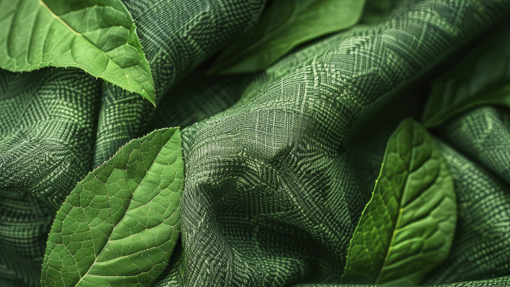
For over six years, Harput Holding has invested in projects that reduce water consumption, recover energy and build a zero-waste production model. Sustainability at FX Textile is embedded in every certification, every production process and every shipment document.Altı yılı aşkın süredir Harput Holding, su tüketimini azaltan, enerji geri kazanan ve sıfır atık üretim modeli oluşturan projelere yatırım yapmaktadır.Durante más de seis años, Harput Holding ha invertido en proyectos que reducen el consumo de agua, recuperan energía y construyen un modelo de producción de residuo cero.
The 2025–2030 Strategic Sustainability Plan tracks all programmes under three pillars: Environment, Social and Governance — aligned with global ESG reporting standards.2025–2030 Stratejik Sürdürülebilirlik Planı, tüm programları Çevre, Sosyal ve Yönetim olmak üzere üç eksen altında izler.El Plan Estratégico de Sostenibilidad 2025–2030 sigue todos los programas bajo tres pilares: Medio Ambiente, Social y Gobernanza.
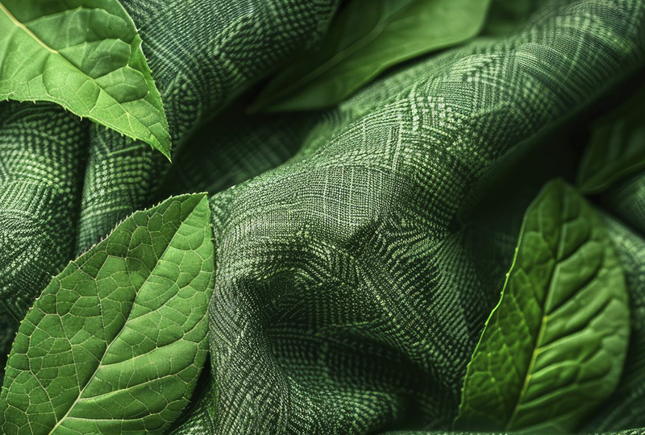
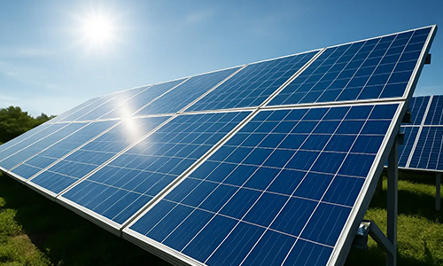
Rooftop solar PV panels at Kemalpaşa Yarn Facility (Miranlı) provide renewable electricity directly to the production line, reducing carbon footprint per kg of yarn produced.Kemalpaşa İplik Tesisi'nde çatı güneş PV panelleri üretim hattına yenilenebilir elektrik sağlar.Paneles solares fotovoltaicos en la Planta de Hilados de Kemalpaşa proporcionan electricidad renovable a la línea de producción.
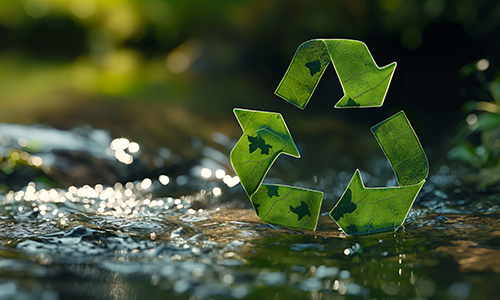
Closed-loop water recycling in water-jet looms. Dyehouse wastewater fully treated before discharge. Rainwater harvesting systems across all facilities.Su jetli tezgahlarda kapalı devre su geri dönüşümü. Boyahane atık suyu deşarj öncesinde tamamen arıtılır. Tüm tesislerde yağmur suyu hasadı.Reciclaje de agua en circuito cerrado en telares. Aguas residuales de tinturería tratadas completamente. Cosecha de lluvia en todas las instalaciones.
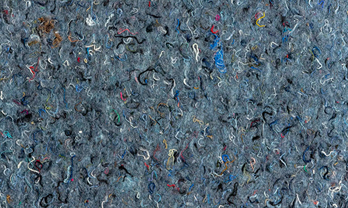
Post-consumer recycled polyester certified under GRS v4.0 and RCS v2.0, traceable from PET bottle to finished fabric. Reduces dependency on virgin petrochemical feedstocks.GRS v4.0 ve RCS v2.0 kapsamında sertifikalı tüketici sonrası geri dönüştürülmüş polyester, PET şişeden bitmiş kumaşa kadar izlenebilir.Poliéster reciclado post-consumo certificado bajo GRS v4.0 y RCS v2.0, trazable desde botella PET hasta tela terminada.
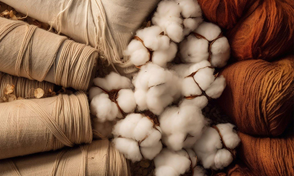
GOTS v7.0 and OCS v3.0 certified organic cotton fabrics. No synthetic pesticides or fertilizers. Full chain-of-custody from field to finished roll.GOTS v7.0 ve OCS v3.0 sertifikalı organik pamuk kumaşlar. Sentetik pestisit veya gübre yok. Tarladan topa tam gözetim zinciri.Telas de algodón orgánico certificadas GOTS v7.0 y OCS v3.0. Sin pesticidas ni fertilizantes sintéticos.
ZDHC-aligned chemical management across all dyehouse and finishing processes. OEKO-TEX® STANDARD 100 certified output confirms no harmful residues in finished fabrics.Tüm boyahane ve apre işlemlerinde ZDHC uyumlu kimyasal yönetimi. OEKO-TEX® STANDARD 100 sertifikalı çıktı.Gestión química alineada con ZDHC. Salida certificada OEKO-TEX® STANDARD 100.
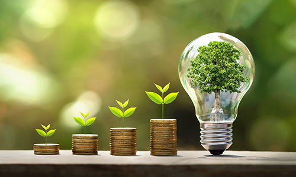
ISO 50001 Energy Management System across all facilities. Ongoing R&D projects targeting carbon footprint reduction through heat recovery and optimised scheduling.Tüm tesislerde ISO 50001 Enerji Yönetim Sistemi. Isı geri kazanımı ve optimize zamanlama ile karbon ayak izi azaltmayı hedefleyen süregelen Ar-Ge projeleri.Sistema de Gestión de Energía ISO 50001 en todas las instalaciones. Proyectos de I+D para reducir la huella de carbono.
Circular economy is one of the core scopes in Harput Holding's R&D roadmap. Over the past six years the group has conducted multiple projects to minimise waste, reuse resources and eliminate environmental damage at source.Döngüsel ekonomi, Harput Holding'in Ar-Ge yol haritasının temel kapsamlarından biridir. Son altı yılda holding, atıkları minimuma indirmek için birden fazla proje yürütmüştür.La economía circular es uno de los ámbitos fundamentales en la hoja de ruta de I+D de Harput Holding.
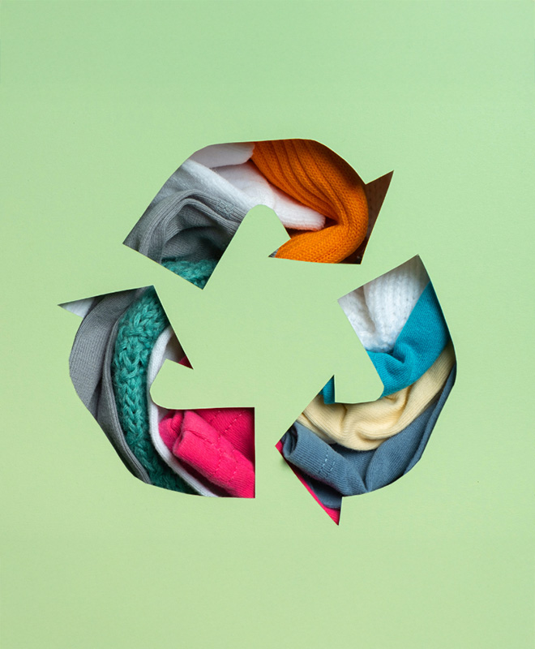
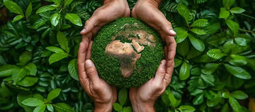
Tracking and reducing environmental impact through measurable KPIs — water, carbon, waste, energy.Su, karbon, atık, enerji ölçülebilir KPI'larla çevresel etkinin izlenmesi ve azaltılması.Seguimiento y reducción del impacto ambiental mediante KPI medibles.
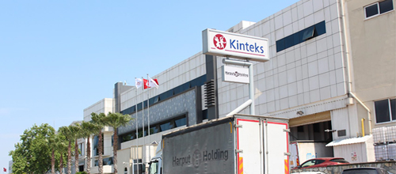
Fair, safe working conditions across all 6 facilities and supply chain. BSCI, ISO 45001, Higg SLM and INDITEX JOIN LIFE compliant.Tüm 6 tesis ve tedarik zincirinde adil, güvenli çalışma koşulları. BSCI, ISO 45001, Higg SLM ve INDITEX JOIN LIFE uyumlu.Condiciones de trabajo justas y seguras en las 6 instalaciones. Conforme con BSCI, ISO 45001, Higg SLM e INDITEX JOIN LIFE.
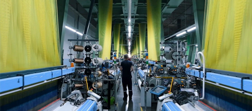
Transparent reporting, third-party auditing and continuous improvement from procurement to export. ISO 9001, 14001, 22000 certified.Tedarikten ihracata şeffaf raporlama, üçüncü taraf denetimi ve sürekli iyileştirme. ISO 9001, 14001, 22000 sertifikalı.Informes transparentes y auditorías de terceros. Certificado ISO 9001, 14001 y 22000.
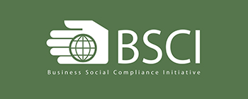
Business Social Compliance Initiative — social auditing framework memberSosyal denetim çerçevesi üyesiMarco de auditoría social
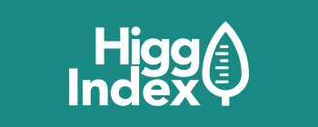
Facility Environmental Module & Social Labour Module active userFEM ve SLM aktif kullanıcısıUsuario activo de FEM y SLM
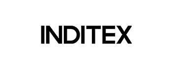
Approved supplier for most sustainable product lineEn sürdürülebilir ürün hattı için onaylı tedarikçiProveedor aprobado para línea sostenible
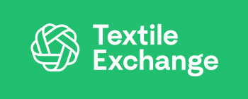
Licensed CB for GRS, OCS and RCS standardsGRS, OCS ve RCS için lisanslı sertifikasyon kuruluşuOrganismo de certificación autorizado